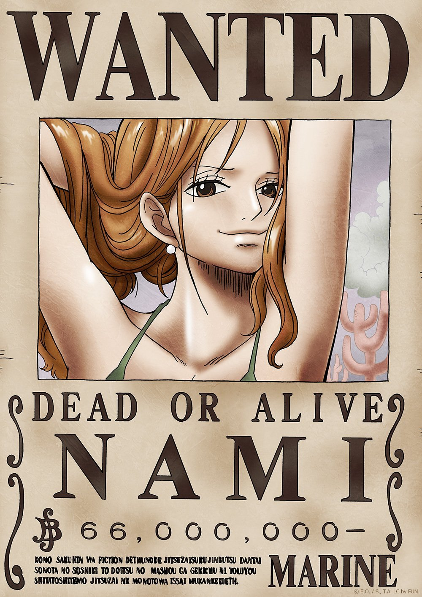
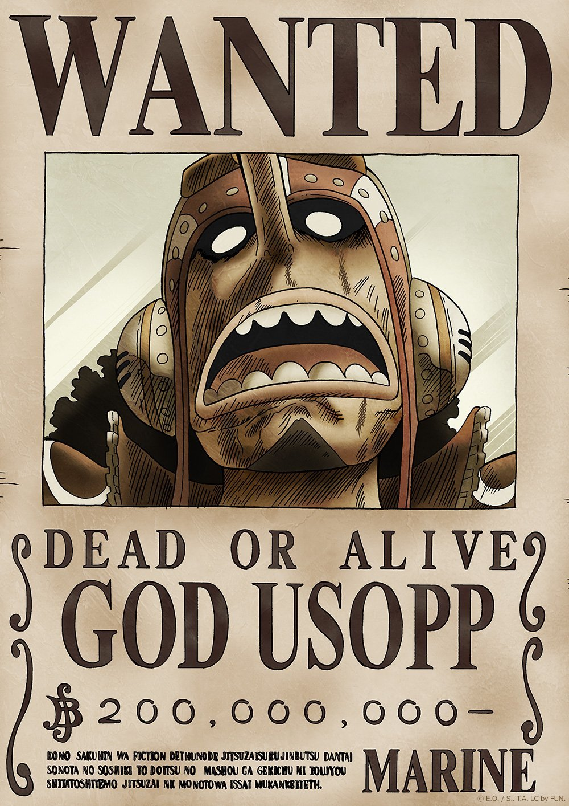

One Piece is a Manga created by Eiichiro Oda released in 1997 and then later adapted into an Anime series in 1999. It’s ongoing to this day; the manga is on chapter 1096 and the anime is on episode 1080, really impressive I know. The main protagonist of One Piece and the one who will be the Pirate King is Monkey D. Luffy or just Luffy for short. The story follows the adventures of Monkey D. Luffy and his crew, the Straw Hat Pirates, where he explores the Grand Line in search of the mythical treasure known as the "One Piece" in order to become the next King of the Pirates.
The Straw Hat Pirates are made up of 10 individuals including Luffy. Roronoa Zoro is a swordsman who uses up to three swords simultaneously, holding one in each hand and a third in his mouth. To fulfill a promise to Kuina, his deceased childhood friend and rival, he aims to defeat "Hawk-Eye" Mihawk and become the world's greatest swordsman. Traveling the seas in search of Mihawk and making a living as a bounty hunter, he becomes infamously known as "Pirate Hunter" Zoro. Adopted and raised by navy seaman turned tangerine farmer Belle-Mère, Nami witnessed her mother being murdered by the infamous Arlong, whose pirate gang occupies their island and extracts tribute from the population. Striking a deal with him, Nami, still a child, but already an accomplished cartographer who dreams of drawing a complete map of the world, joins the pirates, hoping to buy freedom for her village eventually. Growing up as a pirate-hating pirate drawing maps for Arlong and stealing treasure from other pirates, Nami becomes an excellent burglar, pickpocket, and navigator with an exceptional ability to forecast weather. During his early childhood, Usopp was abandoned by his father, Yasopp, who left to join the Red-Haired Pirates. As his mother, Bachina, falls ill, Usopp starts telling tall tales, expressing his hope that his father will return and take them out to sea. He regularly goes to the mansion at the top of the hill where he lives, to visit Kaya. Even after his mother dies, Usopp does not blame his father for leaving. Despite his cowardly disposition, he strives to become a great pirate.
A native to the North Blue, Sanji grew up as part of the Vinsmoke family under his father Vinsmoke Judge, king of the Germa Kingdom, and mother Vinsmoke Sora. Living under a grueling father who only saw Sanji as a soldier, he escapes to Baratie where he learns to cook under and learns his fighting style, which is characterized by the use of legs in combat. Sanji is the fifth member and the fourth to join Monkey D. Luffy’s pirate crew as cook after the battle against Don Krieg. Nico Robin becomes an archaeologist at the age of eight. At some point she gains the power of the Paramecia-type Flower-Flower Fruit , which allows her to have temporary copies of parts of her body, including her eyes and ears, which spring up on surfaces near her. Behind her teachers' backs, she acquires from them the outlawed knowledge of how to translate the ancient stones called Poneglyphs , which are scattered around the world. She comes to share their goal of finding the elusive Real Poneglyph , which is said to tell the world's lost history referred to as the 100-Year Void. However, the World Government finds out about these efforts and sends a battlefleet to stop them. Only Robin escapes the devastating attack that claims the lives of the island's entire population, including that of her mother.

This is the text where the
section has a black background